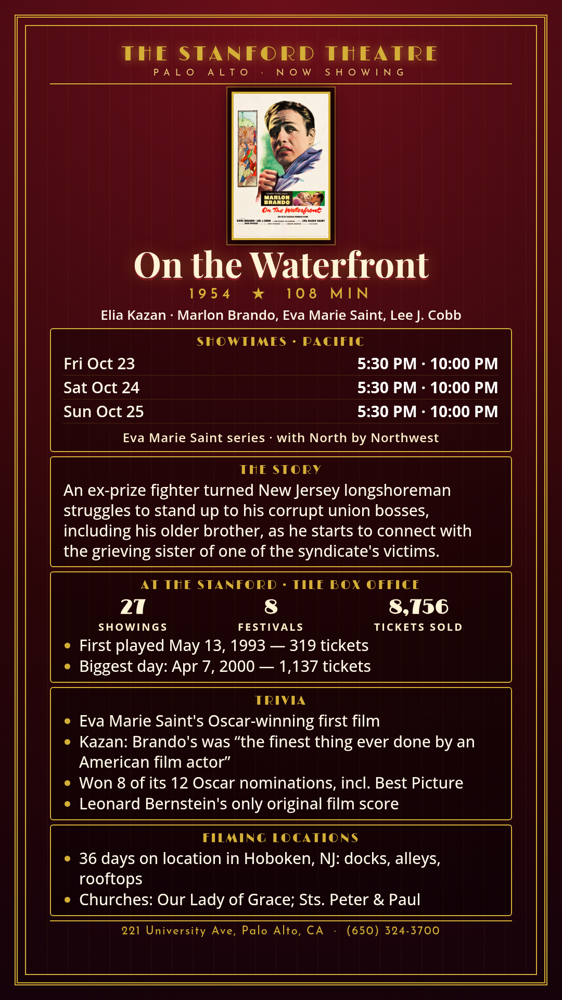

On the Waterfront
Elia Kazan · Marlon Brando, Eva Marie Saint, Lee J. Cobb
An ex-prize fighter turned New Jersey longshoreman struggles to stand up to his corrupt union bosses, including his older brother, as he starts to connect with the grieving sister of one of the syndicate's victims.
Schedule
Remembering Eva Marie Saint · October 16 - 25, 2026
October 23 - 25
- North by Northwest (1959): 7:30 (plus 3:00 Sat/Sun)
- On the Waterfront (1954): 5:30, 10:00
Trivia
- Eva Marie Saint's Oscar-winning first film
- Kazan: Brando's was “the finest thing ever done by an American film actor”
- Won 8 of its 12 Oscar nominations, incl. Best Picture
- Leonard Bernstein's only original film score
Filming Locations
- 36 days on location in Hoboken, NJ: docks, alleys, rooftops
- Churches: Our Lady of Grace; Sts. Peter & Paul
Previous Showings
27 Showings • 8 Festivals
8,756 tickets sold
Past runs (since '03):
- 10/2004 1,448 tickets
w/ A Streetcar Named Desire - 10/2011 577 tickets
w/ A Face in the Crowd - 5/2013 1,207 tickets
w/ Guys and Dolls - 4/2016 1,263 tickets
w/ A Streetcar Named Desire - 10/2026 1,059 tickets
w/ North by Northwest
More

